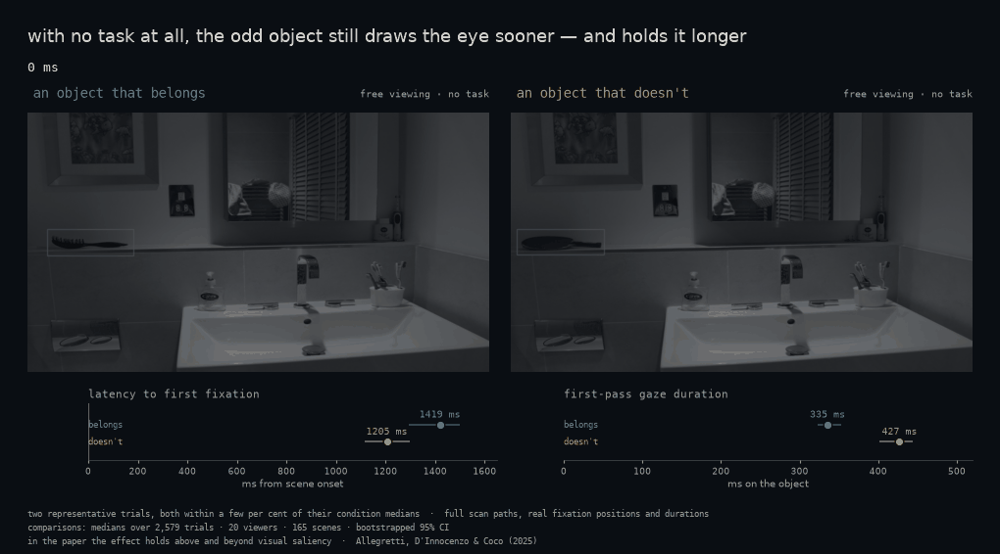
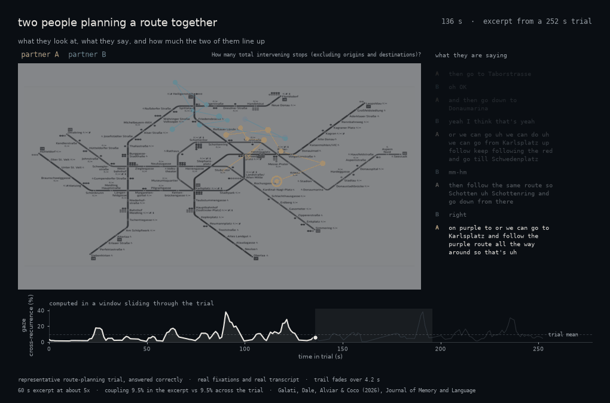
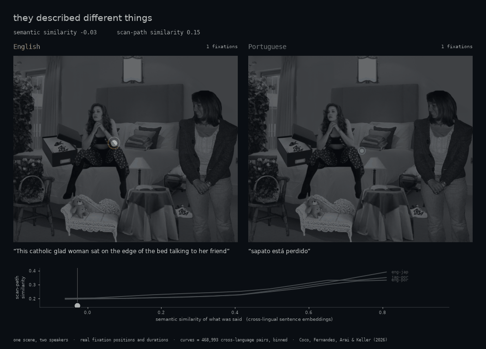

The work, in motion
Every result below is drawn from real recorded data, not illustration. Pick one to jump to the work behind it.
My work sits at the intersection of cognitive neuroscience and computational modelling, using eye-tracking, EEG and machine learning to understand attention, memory and their breakdown across healthy and neurodegenerative ageing.
Every result below is drawn from real recorded data, not illustration. Pick one to jump to the work behind it.
How object meaning guides where we look, and how what we look at determines what we later remember. This line runs from extra-foveal semantic processing during search (Cimminella et al., 2020, AP&P) through semantic interference in long-term visual memory (Mikhailova et al., 2021, PB&R) to the binding of object identity and location in visual short-term memory (Allegretti & Coco, 2026, QJEP). Each strand is run in parallel across younger adults, healthy older adults, and people with MCI or Alzheimer's disease, which is what makes the ageing contrast interpretable rather than incidental.
Underpinning much of it is the VISIONS database (Allegretti, D'Innocenzo & Coco, 2025, Behavior Research Methods): 165 indoor scenes in which the same location holds either a consistent or an inconsistent object, normed for conceptual, perceptual and attentional properties and released openly.

The question that runs through most of this work is not how much is lost, but what is lost and what survives. Run the same naturalistic paradigms across younger adults, healthy older adults, and people with mild cognitive impairment or Alzheimer's disease, and the picture is a fault line rather than a general decline.
A good deal turns out to be preserved. Object semantics are still processed outside foveal vision in Alzheimer's disease (Cimminella et al., 2021, JGPN). The temporary binding of an object's identity to its location survives healthy ageing (D'Innocenzo, Della Sala & Coco, 2022, Scientific Reports), and visual short-term memory binding during object–scene integration is preserved in mild cognitive impairment (Allegretti, Mauti & Coco, 2025, Cortex). What does change is more specific: semantic interference leaves a distinct eye-movement signature in MCI (Coco et al., 2021, Neuropsychology), and within a scene the locations of objects are remembered better than their identities (Coco et al., 2023, Neuropsychology).
Because the signatures are specific rather than global, they can be used to separate conditions that are hard to tell apart clinically: impaired semantic guidance during visual search distinguishes prodromal dementia with Lewy bodies from Alzheimer's disease (Genovese et al., 2026, CogSci), and to build predictive models, with deep-learning classification of MCI from eye movements and image content reaching performance comparable to the state of the art (Rocha et al., 2025). That is the practical goal: markers early enough, and specific enough, to be diagnostically useful.
Fixation-related potentials let us time-lock brain activity to each individual fixation during free viewing, rather than to an artificial trial onset. Using this approach we showed a fixation-related N400 during the semantic integration of object and scene information (Coco, Nuthmann & Dimigen, 2020, JoCN), separating foveal from extra-foveal contributions. The method now underpins the Lewy body dementia biomarker work.
![A bathroom scene shown twice, once with shampoo on the shelf and once with a frying pan in exactly the same place. On both, the same two-fixation eye movement plays: the eye first rests 8.7 degrees away, with a dashed line marking the distance to the object, then makes a saccade onto it. To the right, two fixation-related potential plots. At the pre-target fixation the consistent and inconsistent traces pull apart between 350 and 600 milliseconds and the gap between them is shaded; at the target fixation the same two traces stay together.](assets/img/frp-parafoveal.gif)
When two people solve a task together, their eyes, speech and hands become coupled, and the strength of that coupling predicts how well they do. We have shown attentional coordination in demonstrator–observer dyads facilitates learning (Pagnotta, Laland & Coco, 2020, Cognition), that feedback and cognitive alignment shape collaborative search (Coco, Dale & Keller, 2018, TopiCS), and that task goals constrain how partners distribute alignment between gaze and speech (Galati, Dale, Alviar & Coco, 2026, JML). Related work extends the approach to multiscale behavioural synchronisation in joint tower-building (Coco et al., 2016, IEEE TCDS) and to anticipating the intentions of humans and robots (Duarte et al., 2018, IEEE RA-L).

How speakers coordinate looking and talking when describing what is in front of them. Scan patterns predict sentence production (Coco & Keller, 2012, Cognitive Science), and visual and linguistic saliency interact during syntactic ambiguity resolution (Coco & Keller, 2015, QJEP). Most recently, comparing English, Portuguese and Japanese speakers, we found that the semantic similarity of two descriptions predicts the similarity of their scan patterns in all three languages, while syntactic effects stay confined to the early planning phase: evidence for a shared, prelinguistic organisation of meaning (Coco, Fernandes, Arai & Keller, 2026, Cognitive Science).

Much of the above needs methods that did not exist off the shelf. I develop recurrence-based tools for quantifying the coupling of two behavioural streams, released as the crqa R package and documented as unidimensional and multidimensional methods (Coco et al., 2021, The R-Journal), alongside mousetrack for action-dynamics measures. A parallel strand applies machine learning to cognitive classification, from task decoding out of eye-movement features (Coco & Keller, 2014, Journal of Vision) to continuous profiling of bilingualism (Coco et al., 2025, BLC) and deep-learning models for MCI diagnosis (Rocha et al., 2025).
Forgetting is a fundamental part of our lives, but we know very little about how and why it happens. Past research has mostly neglected the critical role played by visual attention when memories are first stored. Using a novel combination of eye-tracking and advanced statistical modelling, this project explicitly links overt attention to the forgetting of naturalistic visual information. We are developing statistical models that predict individual rates of forgetting by integrating recognition performance, overt attention and intrinsic properties of the images. The project is framed within a cognitive-ageing perspective, aiming to identify which memory mechanisms change or are preserved with age, and to generate diagnostic tools for the early detection of neuropathology at the prodromal stage.
A combined eye-tracking and EEG approach to distinguishing dementia subtypes before diagnosis. Recent work from this line shows that impaired semantic guidance during visual search separates prodromal dementia with Lewy bodies from Alzheimer's disease (Genovese et al., 2026, CogSci).
Enhancing digital neuropsychological assessment with attentional and motor responses, using self-adaptive interactive systems.
The format of memory representations for visual information has long been central to vision science, with the role of semantic knowledge in scaffolding these representations, and how it interfaces with perceptual information from independent episodic instances, is a key debate. As we age, how these representations are formed, maintained and accessed can change significantly, making it critical to assess what mechanisms are preserved or impaired in later life, especially in people showing early signs of neurodegeneration.
Combining experimentation and computational modelling, this project showed that eye movements reveal the effects of semantic interference during the learning of naturalistic scenes (Mikhailova et al., 2021, Psychonomic Bulletin & Review), a mechanism still present in healthy older adults and in people with MCI (Coco et al., 2021, Neuropsychology). We also found that semantic interference does not automatically harm memory: our ability to discriminate between similar items can in fact benefit from it (Delhaye et al., 2024, Memory and Cognition). Computational analyses of visual representations, from low- and high-level image features to deep neural network models, distinguished perceptual from semantic interference in similarity judgment (Mikhailova et al., 2022, LNCS) and recognition memory (Mikhailova et al., 2024, Cognitive Processing), and fed into predictive models of MCI with performance comparable to the state of the art (Rocha et al., 2025).
An independent fellowship at the University of Edinburgh examining how top-down knowledge about objects and scenes is built, retained and deployed, and how that process is disrupted in Alzheimer's disease.
Seed funding that established the attentional-forgetting paradigm later scaled up under PRIN 2022.